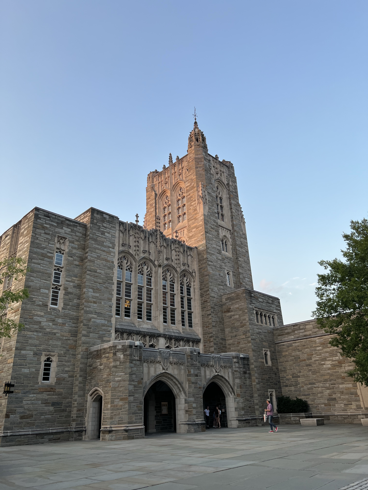

Gosh, it's been a minute. It's been a long time and I can't say I know exactly what drew me back to this. I think it has to do with the excitement of Thanksgiving coming up and seeing my old high school friends again. There's so many things to talk about, and the question that everyone's going to be asking each other is, "How has life been??" which is such a loaded question. It seems like an infinite amount of time has passed since I've seen everyone and I don't know where I wanna start. Also, to be honest, I can't remember the last time I've taken the intentional time to sit and think about my life. I guess that brings me back to here—how has life been?
Off the jump: I think I'm exactly where I'm supposed to be. I've realized the Lord was working in my life very clearly, specifically in the past two years, to get me in a place where I am ready for my life right now and it kinda all started when I first made this site back in 2020. After my last post here, He's continued to show me how to rest, how to love His people, how to pursue Him, and it's all led me to the now. It's been so long since I've done this and I forget how I used to format all my blogging stuff, but it was never meant for other people so I'm just gonna get into my life updates how I want to.
1. REST
Literally thank God I've started my journey with rest long before I got to school here. I can't say I've figured it out or that I'm not still working on it, but gosh, finding rest in a place like Princeton has changed my life. The culture here is to grind and to work until your mental health suffers, and if you aren't working you should feel guilty about it. Chills. No but this is something I will be preaching about for the next four years of my life and will be the hill I die on. Rest is a war.
For me, rest has looked like so many different things. It's been shutting off work at a certain time, even if there's more I could be working on; it's been going on a run and listening to a podcast (yes it's restful); it's been prioritizing my time spent in the Word and with good community; it's been actively pursuing sleep. I cannot emphasize enough how this one aspect of balance completely changes everything.
2. DANCE
Thinking about tangible updates, this was the first thing on my mind. I've joined a dance team on campus and it's dope as heck. I don't even know where to start. BodyHype is this insane contemporary and hip-hop team who's dancers actually blow me away (on and off the stage). I've found some of the most incredible people through this team and I'm in awe of the company that I get to be a part of. Dance is actually just a beautiful form of art and it's been so much fun to be challenged as a new dancer and to enter into this new world I've never seen. I suck at remembering choreo and people here are ridiculously talented, but I'm learning to just have fun with it and honestly I think the moment it becomes anything else is when I stop. But yeah, I never thought I'd ever be on a dance team, yet here I am loving every bit of it. Love my hype fam.
3. CLASSES
My goodness classes are hard. I mean, expected, but still. Ok it's manageable, but on a deeper level I think the hardest part for me is the fact that I don't know what I wanna do in the future. I continue to say I'll be a Mechanical Engineer but still have no clue what that looks like. When I'm taking these classes it feels like I'm running really fast with my eyes shut. I'm on a track to becoming something that I don't know and who knows where that'll lead. I think I'm just scared that I don't know exactly what I'll do in the future and I guess it comes down to, do I trust what God has for me? If that's the root of the problem (which I'm realizing now it probably is), I'm glad it's in His hands because it's definitely better than something I can plan.
4. NOVA
Christian Union Nova is the Christian organization I've been a part of here and it's honestly been keeping me so grounded here. There is such a loving community of believers in this space that continue to uplift me and challenge me in the ways I'm living. I knew going into college this was what I would need and it continues to be a blessing to me the more I pour into it. Strong community has been prayer of mine for probably my whole life and to finally start to get plugged into places where people are seeking this same thing I am is so liberating.
Ok so this is getting long and I'm getting tired but that has been life pretty recently. I'm quite rusty on the blogging and this was all over the place but it feels nice to be back writing again. This post was super over-arching and doesn't quite capture all my thoughts but that's alright. I think I'm gonna try and make this a regular thing again—I kinda just wanna write about life more LOL. Who knows, we'll see. Be back soon.
life & updates
